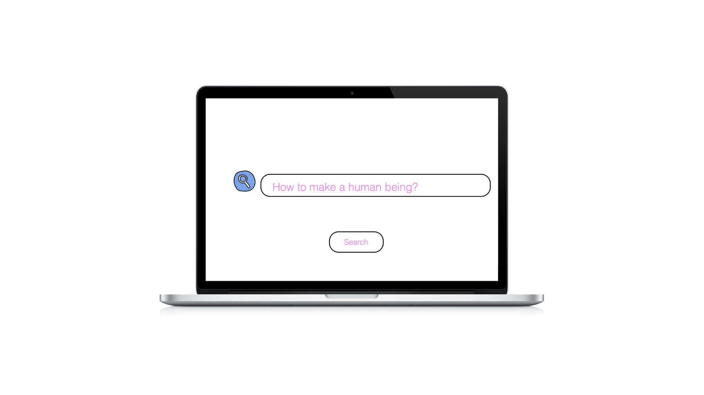

How to Make a Human Being?
Digital Storytelling, Video Editing, Stop Motion

How to make a human Being? is a project exploring the boundaries of instructional design and digital storytelling by transforming a conventional "how-to" prompt into an intentionally unrealistic and unachievable tutorial.
Through a seamless blend of physical and animated elements, the experience challenges user expectations by presenting abstract concepts within a structured, tutorial-like format. The web interface serves as both a narrative container and an interactive medium, enhancing user engagement through multimedia integration.
-
User Experience (UX):
Crafting an intuitive yet thought-provoking interaction model that guides users through an unconventional tutorial.
-
User Interface (UI):
Designing a cohesive visual language that balances real-world and animated components while maintaining accessibility and engagement.
-
Interaction & Motion Design:
Implementing animated sequences and dynamic transitions to enhance storytelling and usability.
-
Web Development & Implementation:
Developing a functional and responsive interface that effectively presents multimedia elements.
-
Prototyping & Testing:
Iterating on user interactions to ensure clarity, engagement, and an optimal digital experience.